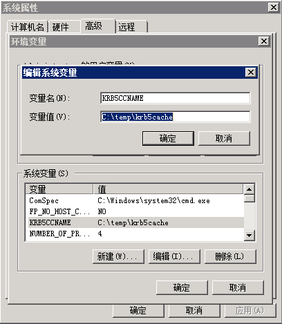
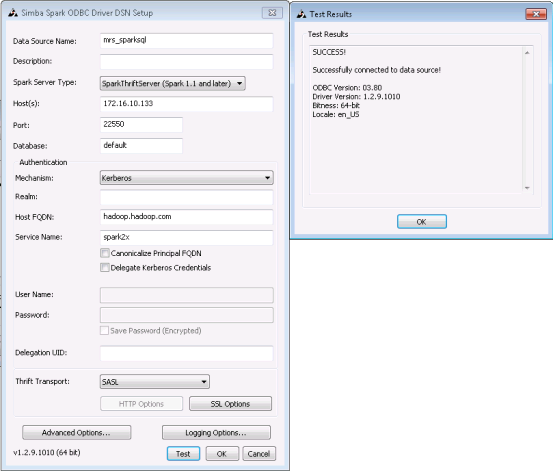
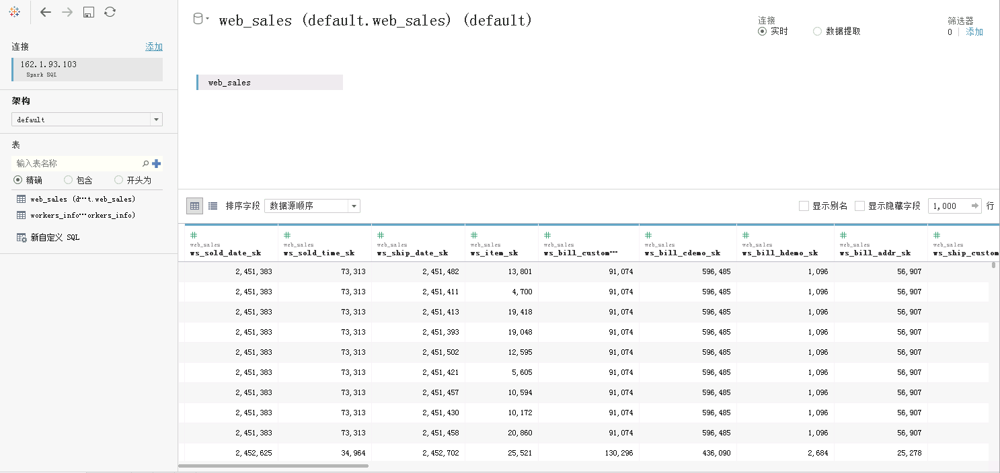
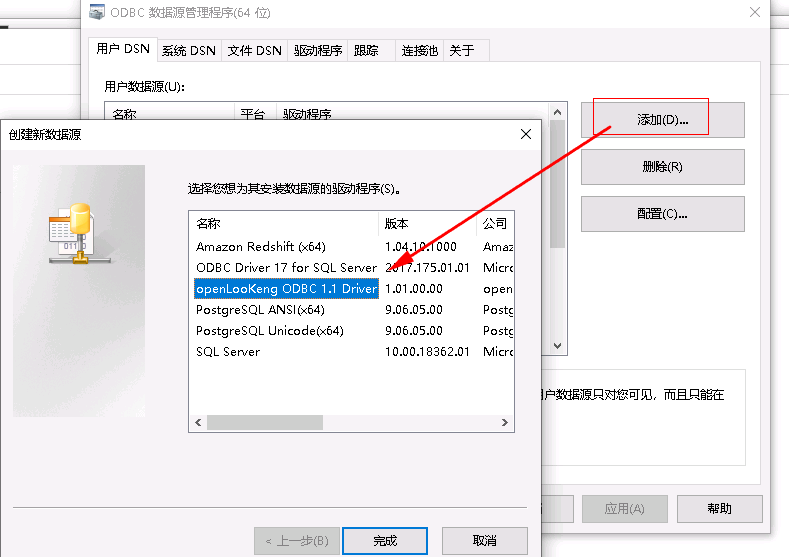
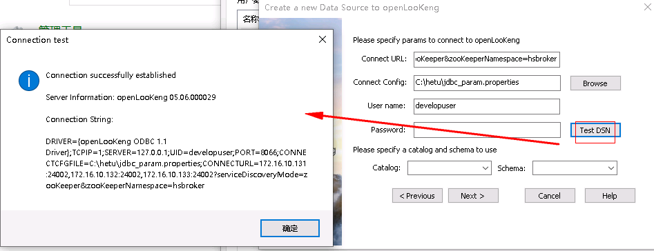
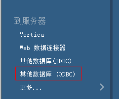
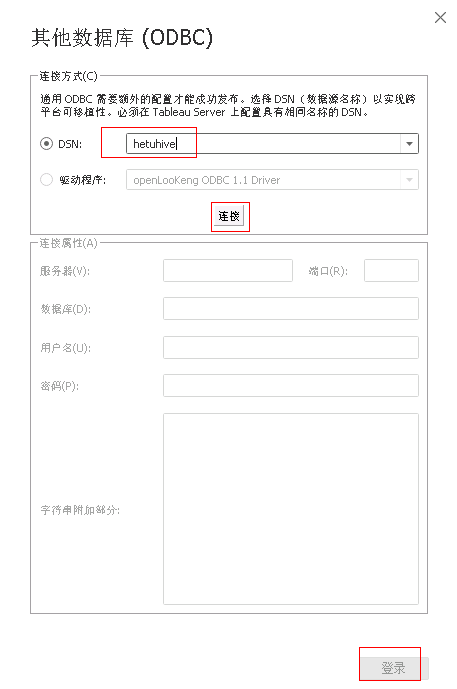
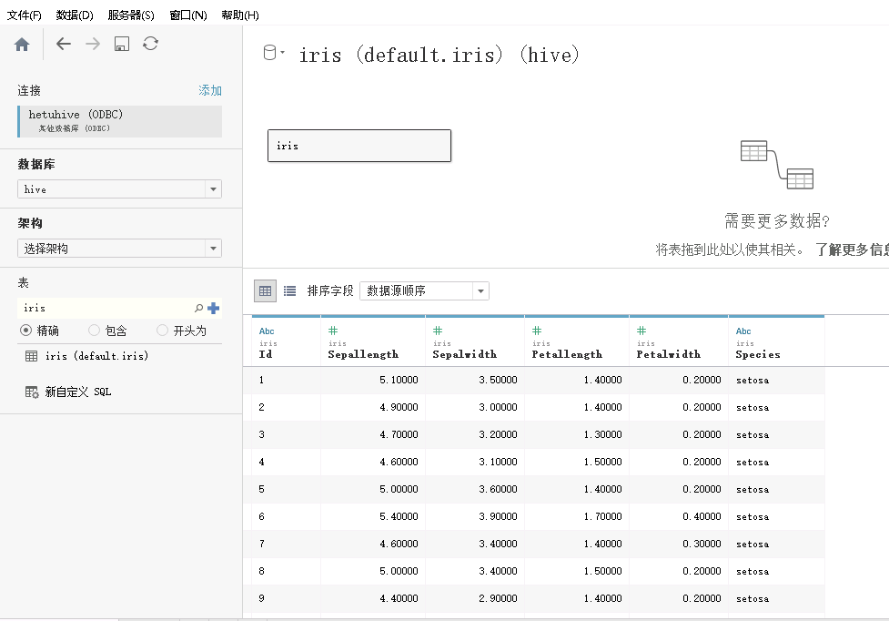

Tableau对接FusionInsight¶
适用场景¶
Tableau 10.0.0 ↔ FusionInsight HD V100R002C30 (Hive/SparkSQL)
Tableau 10.0.0 ↔ FusionInsight HD V100R002C50 (Hive/SparkSQL)
Tableau 10.1.4 ↔ FusionInsight HD V100R002C60U20 (Hive/SparkSQL)
Tableau 10.3.2 ↔ FusionInsight HD V100R002C70SPC200 (Hive/SparkSQL)
Tableau 10.5.0 ↔ FusionInsight HD V100R002C80SPC100 (Hive/SparkSQL)
Tableau 10.5.0 ↔ FusionInsight HD 6.5 (Hive/SparkSQL)
Tableau 10.5.0 ↔ FusionInsight MRS 8.0 (Hive/SparkSQL/Hetu)
配置Windows的kerberos认证¶
- 下载并安装MIT Kerberos
下载网址：http://web.mit.edu/kerberos/dist/#kfw-4.0
版本与操作系统位数保持一致，本文版本kfw-4.1-amd64.msi。
-
确认客户端机器的时间与FusionInsight HD集群的时间一致，时间差要小于5分钟
-
设置Kerberos的配置文件
在FusionInsight Manager创建一个角色与“人机”用户，具体请参见《FusionInsight HD 管理员指南》的创建用户章节。角色需要根据业务需要授予Hive的访问权限，并将用户加入角色。例如，创建用户“tableau”并下载对应的keytab文件user.keytab以及krb5.conf文件，把krb5.conf文件重命名为krb5.ini，并放到C:\ProgramData\MIT\Kerberos5目录中。
-
设置Kerberos票据的缓存文件
-
创建存放票据的目录，例如“C:\temp”。
-
设置Windows的系统环境变量，变量名为“KRB5CCNAME”，变量值为“C:\temp\krb5cache”。

-
重启机器。
-
在Windows上进行认证
-
使用上述创建的用户名密码登录，用户名的格式为：用户名@Kerberos域名。
-
打开MIT Kerberos，单击“get Ticket”，在弹出的“MIT Kerberos: Get Ticket”窗口中，“Pricipal”输入用户名，“Password”输入密码，单击“OK”。

配置Hive数据源¶
Tableau中配置Hive数据源，对接Hive的ODBC接口。
- 下载并安装ODBC驱动：下载地址
根据操作系统类型选择对应的ODBC版本，下载并安装。
-
配置ODBC驱动
-
创建DSN(Data Source Name)：选择 开始 -> Simba Spark ODBC Driver -> ODBC Administrator。
-
选择 User DSN -> Add -> Cloudera ODBC Driver for Apache Hive -> Finish
按实际配置相应的变量，
- Host(s): Hive Service主节点
- Port：Hive Service端口21066
- Mechanism：Kerberos
- Host FQDN：hadoop.hadoop.com
- Service Name：hive
- Realm：留空
如下图

Advanced Options不需要进行配置默认的参数即可连接成功。
-
点击中的Test进行测试连接，如果出现下图，则表示ODBC连接Hive成功。

-
Tableau使用数据源
-
Tableau启动后会进入连接选择界面，点击“更多服务器”，再点击“其他数据库（ODBC）”；
-
DSN选择hive_odbc（上一步中设置ODBC的名称），点击连接，如下图所示，点击“连接”，然后登陆。

-
查询百万级数据表数据

-
查询多表数据

配置Spark数据源¶
- 下载并安装spark的ODBC驱动 ODBC驱动下载地址：http://www.tableau.com/support/drivers

-
创建DSN（Data Source Name）
-
打开
C:\Program Files\Simba Spark ODBC Driver\lib\DriverConfiguration64.exe -
按实际配置相应的变量
- Mechanism：Kerberos
- Host FQDN：hadoop.hadoop.com
- Service Name：spark
- Realm：留空
如下图：

- 点击“Advanced Options”，勾选如下选项：

-
点击OK，保存配置。
-
Tableau使用Spark数据源
-
Tableau启动后会进入连接选择界面，点击“更多服务器”，再点击“Spark SQL”，作如下配置：

-
其中服务器为JDBCServer(主)的业务IP。

-
端口为FusionInsight中Spark服务配置，导出服务配置文件，其中
hive.server2.thrift.port 对应值。

说明(重要)：上述配置介绍的是对接Spark 1.x的配置，如果对接的是Spark 2.x，则端口需要更改，具体配置可参考下图的dsn，端口为22550

-
点击“登录”，进入tableau页面，选择架构和表，结果如下。

-
用Tableau做实时连接，打开工作簿，对该表进行图形化分析。

-
性能测试
- 查询包含百万条数据的表web_sales

- 多表关联查询：store_sales和item表做关联查询


增加customer_address表

查询结果：

Hetu对接配置¶
odbc配置¶
- 安装hetu-odbc-win64.msi
安装地址：https://openlookeng.io/download.html

下载完成后，双击安装，选默认配置即可，一直next，直到finish
-
配置数据源驱动
-
先停止自动启动的odbc服务
a. 以管理员身份进入
C:\Program Files\openLooKeng\openLooKeng ODBC Driver 64-bit\odbc_gateway\mycat\bin目录b. 执行启动停止自动启动命令:
mycat.bat stop
注意： 需要以管理员身份启动cmd，到相应路径执行stop命令，否则会报拒绝访问的错误
-
替换hetu的jdbc驱动
a. 从HETU客户端获取驱动jar包，比如 presto-jdbc-316-hw-ei-302002.jar
b. 将presto-jdbc-316-hw-ei-302002.jar 拷贝到
C:\Program Files\openLooKeng\openLooKeng ODBC Driver 64-bit\odbc_gateway\mycat\lib目录下，并删除该目录下之前的hetu-jdbc-1.0.1.jar包 -
准备hetu对接配置文件
a. 从Manager获取对接用户user.keytab以及krb5.conf文件
b. 使用WinSCP工具以omm用户登录FusionInsight Hetu集群中部署了HSBroker角色的节点，进入
${BIGDATA_HOME}/FusionInsight_Hetu_8.0.2.1/xxx_HSBroker/etc/目录，下载“jaas-zk.conf”和“hetuserver.jks”文件到本地c. 参考如下修改jaas-zk.conf文件，keyTab为访问HetuEngine用户的keytab文件路径
- 编辑ODBC的wrapper.conf配置Client { com.sun.security.auth.module.Krb5LoginModule required useKeyTab=true keyTab="C:/hetu/user.keytab" principal="developuser@HADOOP.COM" useTicketCache=false storeKey=true debug=true; };进入
C:\Program Files\openLooKeng\openLooKeng ODBC Driver 64-bit\odbc_gateway\mycat\conf目录下，编辑wrapper.conf文件增加JVM参数：
wrapper.java.additional.13=-Djava.security.auth.login.config=C:\\hetu\\jaas-zk.conf wrapper.java.additional.14=-Djava.security.krb5.conf=C:\\hetu\\krb5.conf wrapper.java.additional.15=-Dzookeeper.auth.type=kerberos wrapper.java.additional.16=-Dzookeeper.server.principal= zookeeper/hadoop.hadoop.com wrapper.java.additional.17=-Dzookeeper.sasl.clientconfig=Client -
编辑ODBC的server.xml
进入
C:\Program Files\openLooKeng\openLooKeng ODBC Driver 64-bit\odbc_gateway\mycat\conf目录下，编辑server.xml中的协议前缀。将server.xml文件中属性值
jdbc 修改为 //
//jdbc:presto:// 
-
准备jdbc连接配置文件jdbc_param.properties：
新建jdbc_param.properties文件，并添加如下内容进行配置
说明：当前登录方式采用keytab方式登录，如果使用用户名/密码方式登录，则解开password注释，同时注释KerberosKeytabPath参数项。#注意事项： #1、文件路径分隔符请使用"\\"或“/” #关键字列表如下： # url: “<catalog>”、"<schema>" 分别是JDBC客户端要连接的catalog和schema名称。“<zkNode_IP>:<zkNode_Port>”是ZooKeeper的URL，多个URL以逗号隔开。例如：“192.168.81.37:24002,192.168.195.232:24002,192.168.169.84:24002”。样例：jdbc:presto://<zkNode1_IP>:<zkNode1_Port>,<zkNode2_IP>:<zkNode2_Port>,<zkNode3_IP>:<zkNode3_Port>/<catalog>/<schema>?serviceDiscoveryMode=zooKeeper&zooKeeperNamespace=hsbroker # user: 访问数据库用户名 # password: 访问数据库密码 # : # : # : user=developuser #password=123456 # SOCKS 代理服务器，如 localhost:1080 #socksProxy # HTTP 代理服务器地址，如 localhost:8888 #httpProxy # 要附加到任何指定的ApplicationName客户端信息属性的前辍，该属性用于设置Presto查询的源名称，如果既未设置此属性也未设置ApplicationName，则查询的源将为presto-jdbc #applicationNamePrefix # 基于令牌的身份验证令牌 #accessToken # 是否使用HTTPS连接，默认false SSL=true # Java Keystore文件路径 #SSLKeyStorePath # Java KeyStore密码 #SSLKeyStorePassword # Java TrustStore文件路径，SSLTrustStorePath=path，path里的路径分隔符使用"\\"或"/" SSLTrustStorePath=C:\\hetu\\hetuserver.jks SSLTrustStorePassword=Changeme_123 # Java TrustStore密码 #SSLTrustStorePassword # Kerberos服务名称，固定为HTTP KerberosRemoteServiceName=HTTP # Kerberos principal，KerberosKeytabPath指定的keytab对应的用户名 KerberosPrincipal=developuser # 是否使用规范化主机名，默认为false #KerberosUseCanonicalHostname # Coordinator节点Kerberos service principal匹配模式，默认值为 ${SERVICE}@${HOST}。如果启用KerberosUseCanonicalHostname后，${SERVICE} 将替换为KerberosRemoteServiceName 的值，而${HOST}将替换为 coordinator 节点机器的主机名。 KerberosServicePrincipalPattern=${SERVICE}@${HOST} # 访问数据源用户的krb5配置文件，参考准备安全认证获取 KerberosConfigPath=C:\\hetu\\krb5.conf # 访问数据源用户的keytab配置文件，参考准备安全认证获取 KerberosKeytabPath=C:\\hetu\\user.keytab # Kerberos credential 缓存路径 #KerberosCredentialCachePath # 用于连接外部的额外凭据。extraCredentials是键值对的列表，如foo:bar;abc:xyz将创建凭据abc = xyz和foo = bar #extraCredentials # jaas-zk.conf配置文件的路径，用于访问安全模式下的ZooKeeper #java.security.auth.login.config=C:\\hetu\\jaas-zk.conf # krb5配置文件，参考准备安全认证获取 #java.security.krb5.conf=C:\\hetu\\krb5.conf # ZooKeeper的认证方式，安全模式下取值为kerberos #zookeeper.auth.type=kerberos # 指定ZooKeeper服务端principal，配置参数“zookeeper.server.principal”可以确保客户端即使不能从服务端获取服务端principal，也可以成功连接到ZooKeeper服务端。格式为：zookeeper/hadoop.<系统域名的小写>，其中域名为krb5.conf文件中的default_realm字段值 #zookeeper.server.principal=zookeeper/hadoop.hadoop.com # jaas-zk.conf配置文件中的条目名称 #zookeeper.sasl.clientconfig=Client # 用户所属的租户 tenant=default # 只支持on_yarn deploymentMode=on_yarn # 固定为${SERVICE}@${HOST} KerberosServicePrincipalPattern=${SERVICE}@${HOST} -
重启odbc服务 a. 进入
C:\Program Files\openLooKeng\openLooKeng ODBC Driver 64-bit\odbc_gateway\mycat\bin目录b. 执行启动命令
mycat.bat restart
注意：每次修改配置时都需要停止odbc服务，修改完毕后再重启服务。
-
配置数据源连接
在window 系统的控制面板中输入odbc搜索odbc的管理程序，如图：

应用程序中点击 “添加” -> “openLooKeng ODBC 1.1 Driver”-> ”完成”

填写名称和描述

点击Next后，填写URL， 选择JDBC配置文件，填写User Name

172.16.10.131:24002,172.16.10.132:24002,172.16.10.133:24002?serviceDiscoveryMode=zooKeeper&zooKeeperNamespace=hsbroker
- 测试连接：

配置tableau hetu odbc¶
-
打开tableau选择其他数据库(ODBC)

-
选择配置好的dsn,点击连接，然后点击登录

-
查看结果

FAQ¶
- 找不到C:\ProgramData\MIT\Kerberos5文件夹
C:\ProgramData一般属于隐藏文件夹，设置文件夹隐藏可见或者使用搜索功能即可解决问题。
- 连接成功无数据库权限
连接所使用的用户需要有数据库的权限，否则将导致ODBC连接成功却无法读取数据库内容。
- ODBC连接失败
常见情况是Host(s)、Port、Host FQDN等的输入数据有误，请根据实际情况进行输入
- 票据24小时后过期，无法再访问数据
在windows上新增定时任务，定时执行kinit命令，刷新kerberos票据